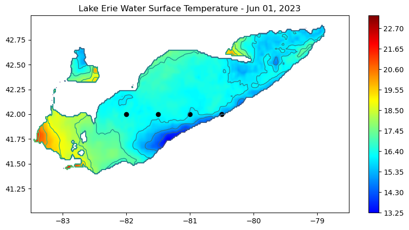
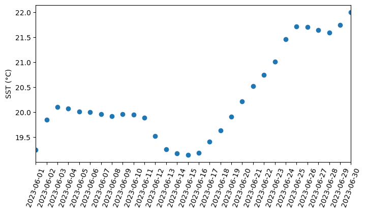

import urllib.request
url="https://apps.glerl.noaa.gov/erddap/griddap/GLSEA_ACSPO_GCS.nc?sst%5B(2023-06-01T12:00:00Z):1:(2023-06-30T12:00:00Z)%5D%5B(41):1:(43)%5D%5B(-83.5):1:(-78.5)%5D"
urllib.request.urlretrieve(url, "e_sst.nc")Python Tutorial - How to work with CoastWatch data in Python
This tutorial is based on the OceanWatch tutorial meterial edited with Great Lakes data. This tutorial will show the steps to grab data in ERDDAP from Python, how to work with NetCDF files in Python and how to make some maps and time-series water surface temperature (sst) in Lake Erie.
1. Downlading data from Python
Because ERDDAP includes RESTful services, you can download data listed on any ERDDAP platform from Python using the URL structure. For example, the following page allows you to subset daily water surface temperature data from the dataset GLSEA_ACSPO_GCS
In this specific example, the URL we generated is :
https://apps.glerl.noaa.gov/erddap/griddap/GLSEA_ACSPO_GCS.nc?sst%5B(2023-06-01T12:00:00Z):1:(2023-06-30T12:00:00Z)%5D%5B(41):1:(43)%5D%5B(-83.5):1:(-78.5)%5D
In Python, run the following to download the data using the generated URL. Note: replace coastwatch.glerl.noaa.gov with apps.glerl.noaa.gov) :
2. Importing NetCDF4 data in Python
Now that we’ve downloaded the data locally, we can import it and extract our variables of interest.
The xarray package makes it very convenient to work with NetCDF files. Documentation is available here: http://xarray.pydata.org/en/stable/why-xarray.html
import xarray as xr
import netCDF4 as nc- Open the file and load it as an xarray dataset:
ds = xr.open_dataset('e_sst.nc',decode_cf=False)
#ds = xr.open_dataset('e_sst.nc')- Examine the data structure:
dsprint(ds)- Examine which coordinates and variables are included in the dataset:
#ds.dimsds.coordsds.data_varsds.attrs- Examine the structure of sst:
ds.sst.shapeOur dataset is a 3-D array with 143 rows corresponding to latitudes and 358 columns corresponding to longitudes, for each of the 30 time steps.
- Get the dates for each time step:
ds.timeds.time.attrsthe time units is seconds, we need to convert the seconds to dates.
dates=nc.num2date(ds.time,ds.time.units,only_use_cftime_datetimes=False,
only_use_python_datetimes=True )
datesThe datetime object includes year, month, hour, minutes, eg. 2021, 6, 12, 0.
Working with the extracted data
Creating a map for one time step
Let’s create a map of SST for June 1, 2021 (our first time step).
import pandas as pd
import numpy as np
from matplotlib import pyplot as plt
from matplotlib.colors import LinearSegmentedColormap
#np.warnings.filterwarnings('ignore')- Examine the values of sst:
ds.sst.valuesds.sst.attrsds.sst.attrs['_FillValue']#ds.sst.dims
#ds.sst.coords- Make a new sst DataArray and replace _fillValue with NaN
#nan_sst = ds.sst.where(ds.sst.values != -99999.0)
nan_sst = ds.sst.where(ds.sst.values != ds.sst.attrs['_FillValue'])
# nan_sst[time][latitude][longitude]
#print(nan_sst[10][100][200])
print(nan_sst)- Set some color breaks
np.nanmin(ds.sst)# find min value in man_sst
np.nanmin(nan_sst)np.nanmax(nan_sst)levs = np.arange(13.25, 23.35, 0.05)
len(levs)- Define a color palette
# init a color list
jet=["blue", "#007FFF", "cyan","#7FFF7F", "yellow", "#FF7F00", "red", "#7F0000"]- Set color scale using the jet palette
cm = LinearSegmentedColormap.from_list('my_jet', jet, N=len(levs))
#https://www.youtube.com/watch?v=qk0n-YaKIkY- plot the SST map
np.linspace(-82.5,-80,num=4)plt.subplots(figsize=(10, 5))
#plot first sst image: nan_sst[0,:,:]
plt.contourf(nan_sst.longitude, nan_sst.latitude, nan_sst[0,:,:], levs,cmap=cm)
#plot the color scale
plt.colorbar()
#example of how to add points to the map
plt.scatter(np.linspace(-82,-80.5,num=4),np.repeat(42,4),c='black')
#example of how to add a contour line
step = np.arange(9,26, 1)
plt.contour(ds.longitude, ds.latitude, ds.sst[0,:,:],levels=step,linewidths=1)
#plot title
plt.title("Lake Erie Water Surface Temperature - " + dates[0].strftime('%b %d, %Y'))
plt.show()
Plotting a time series
Let’s pick the following box : 41.75-42.0N, 83.0-83.5W. We are going to generate a time series of mean SST within that box.
- first, let’s subset our data:
lat_bnds, lon_bnds = [41.75, 42.0], [-83.5, -83.0]
a_sst=nan_sst.sel(latitude=slice(*lat_bnds), longitude=slice(*lon_bnds))
print(a_sst)- let’s plot the subset:
#plot first image of the a_sst array
plt.contourf(a_sst.longitude, a_sst.latitude, a_sst[0,:,:], levs,cmap=cm)
plt.colorbar()
plt.title("Subset of Lake Erie Water Surface Temperature " + dates[0].strftime('%b %d, %Y'))
plt.show()
- let’s compute the daily mean over the bounding region:
res=np.nanmean(a_sst,axis=(1,2))
res- let’s plot the time-series:
plt.figure(figsize=(8,4))
plt.scatter(dates,res)
degree_sign = u"\N{DEGREE SIGN}"
plt.ylabel('SST (' + degree_sign + 'C)')
plt.xlim(dates[0], dates[-1])
plt.xticks(dates,rotation=70, fontsize=10 )
plt.show()
Creating a map of average SST over a month
- let’s compute the monthly mean for the region:
import warnings
warnings.filterwarnings('ignore')
mean_sst=np.nanmean(nan_sst,axis=0)mean_sst.shape- let’s plot the map of the average SST in the region for 2021 June:
plt.subplots(figsize=(10, 5))
plt.contourf(ds.longitude, ds.latitude, mean_sst, levs,cmap=cm)
cbar = plt.colorbar()
cbar.set_label('SST')
plt.title("Mean SST " + dates[0].strftime('%Y-%m-%d')+' - '+dates[-1].strftime('%Y-%m-%d'))
plt.show()
!jupyter nbconvert --to html GL_python_tutorial1.ipynb